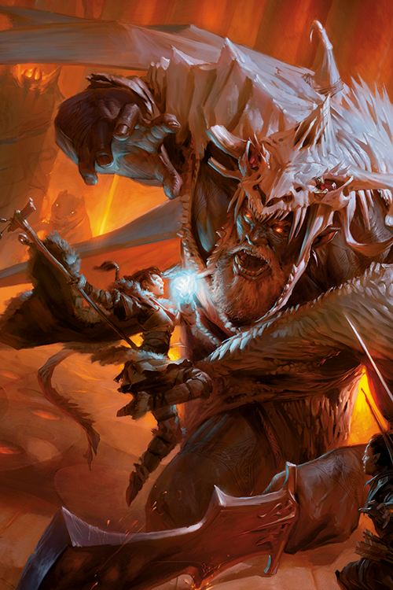
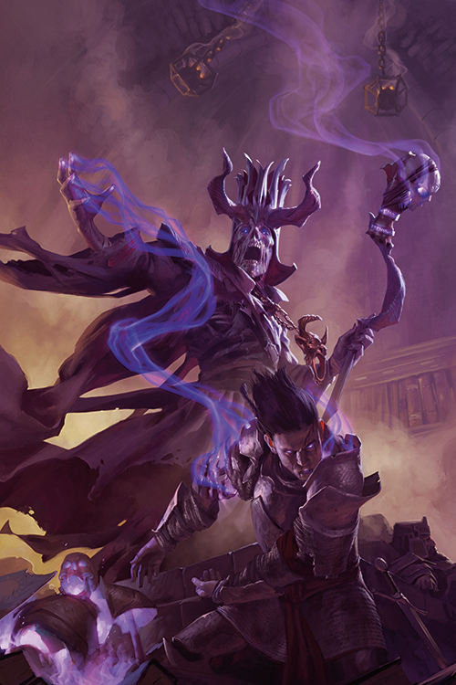
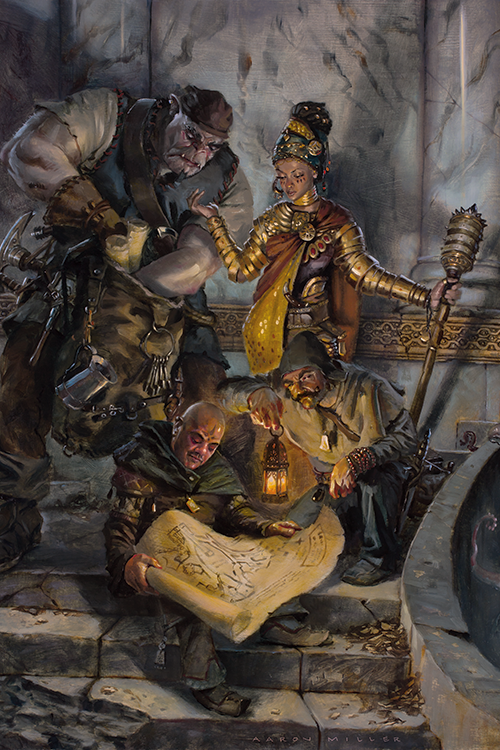

Rol de los jugadores
Cuando juegas D&D, tomas el rol de un aventurero, un hábil guerrero, un clérigo devoto, un pícaro peligroso, o un mago que lanza hechizos.
Tu primer paso es crear y crear un personaje por tu cuenta. Tu personaje es una combinación de sus atributos dentro del juego, ganchos argumentales y tu imaginación. Escoges una raza (como un humano, un elfo, un enano o un mediano) y una clase (como un guerrero o mago). También inventas la personalidad, la apariencia, y el trasfondo de tu personaje. Una vez completado, el personaje sirve como tu representativo en el juego.
Con algunos amigos y algo de imaginación, te puedes lanzar en grandes aventuras y misiones desafiantes, poniéndote a prueba contra diferentes desafíos y peligrosos monstruos.

Rol del Narrador o Dungeon Master
Un jugador toma el rol del Dungeon Master, el que dirige el juego, hace de narrador y de árbitro. El DM está a cargo de la aventura, que aparece en el libro de aventuras, mientras los personajes sortean los peligros de la aventura y deciden donde explorar.
El DM puede describir la entrada al castillo, y los jugadores pueden decidir que quieren hacer sus aventureros. ¿Se acercarían de forma temeraria a la puerta caída? ¿O podrían intentar escabullirse sigilosamente en caso de que alguien los estuviera observando desde algún rincón o lugar oculto? ¿Quizás intentar rodear el castillo para buscar otra entrada? ¿O lanzarían un hechizo sobre si mismos para volverse invisibles?

Una aventura en marcha
El juego no tiene un final real como tal, cuando una historia o misión se completan, otra puede comenzar, creando una continúa historia en proceso usualmente llamada campaña. Mucha gente que juega el juego tiene sus campañas en marcha por meses o años, encontrándose con sus amigos cada semana o cuando sus agendas coincidan para continuar la historia donde la dejaron.
Los aventureros se vuelven más poderosos mientras la campaña continua. Cada monstruo derrotado, cada misión completada, y cada tesoro recuperado no solo añaden un extra a la continua historia, sino que también ayuda a los aventureros a aprender nuevas habilidades. Este incremente de poder está reflejado por el nivel del aventurero.
No existe tal cosa como ganar o perder en un juego de D&D. Al menos, no en la forma en que usualmente entendemos esos términos. En conjunto, el DM y los jugadores crearon una historia excitante de aventureros valientes que enfrentan desafíos peligrosos. El grupo puede llegar a fallar en completar una aventura de forma exitosa, pero si todos tienen un buen tiempo y crean una memorable historia, todos ganan.